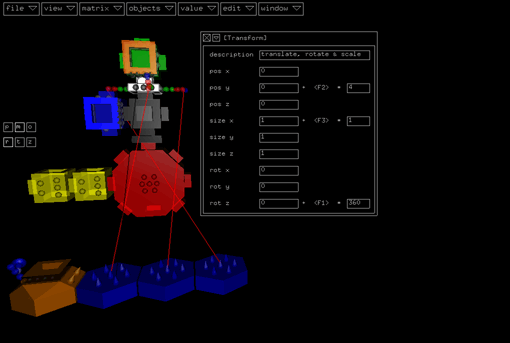
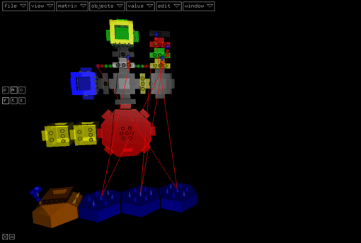
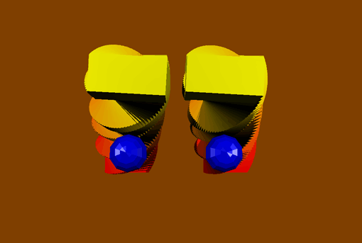
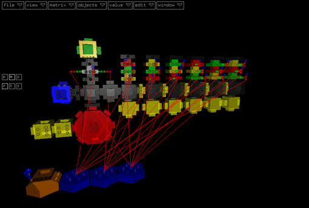
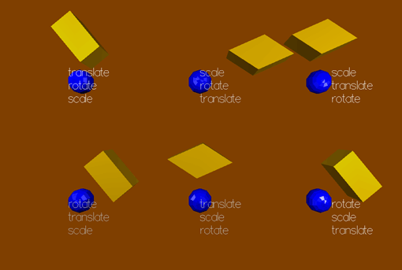
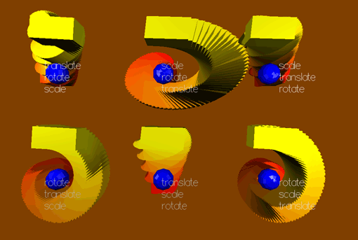

In this tutorial I want to focus on two things:
- The equality of the transform
module to the application of a translate,
rotate
and scale
module in exactly this order
- The importance of the order of matrix modules in general.
I won't explain the creation of the project step by step. It's
a good exercise to recreate the project from the screenshots.
The basic setup of the project is shown below:

A camera displays a red cube and a blue sphere, both located
at the origin. The cube will be transformed by a transform
matrix module. The transformation consists of a translation
along the y-axis (up), a rotation around the z-axis (pointing
out of the screen) and a scaling along the x-axis (to the right).
The next step shows one of many ways to display the equality
of the tranform module and the application of a translate, a rotate
and a scale matrix module:

Instead of copying the cube and the sphere modules with their
color attributes, I inserted two label
modules below them and linked these in the additional hierarchy
with goto modules.
The result of this test is shown below (with the clear frame
of the global
modulator switched of, to display the movement of the cube):

As expected, the two structures behave equal.
In the final project we test the result of the six possible different
orders of the transformations:

Every matrix stack got an additional text module describing the
order of the matrix application. The original transform module
was deactivated by inserting another label.
The following images show the result at an intermediate point
of the animation cycle:

This screenshot displays one feature of transformation orders
very nicely:
A scale transformation followed by a rotation 'distorts'
objects.
The next screen displays the different movements of the cubes
in a full animation cycle:

The [scale translate rotate] and [translate scale rotate] order
result in the same movement, also the [rotate scale translate]
and [rotate translate scale] orders. So we come to the conclusion
of this minitutorial:
Different transformation orders have different results
(only exception: translation/scale equals scale/translation).
Project File
matrices.kds